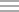

Managing templates
On the Templates page, you can view information about templates in a list or tile view. To switch between views, click the Tile icon or List icon  at the top of the Templates page. When in tile view, you can view the templates under a category by clicking the graphic that represents the category.
Users with standard permissions can view details of only those templates for which the administrator has granted permission.
Templates - My Templates List View
The My Templates page displays the details of the templates that you have created.
| Field | Description |
| + Add a Template | Allows you to add a template. |
| Export All | Allows you to export all templates to a .csv file. |
| Filter By | Allows you to filter and view templates based on the template category. |
| State | Displays the state of the template - Draft or Published. |
| Category | Displays the template category. |
| Name | Displays the template name. |
| Last Deployed On | Displays the date when the template was last deployed. |
| Components | Displays the components included in the template. |
Templates - Sample Templates
The Sample Templates page displays the default templates that you can use in your environment.
| Field | Description |
| Name | Displays the template name. |
| Components | Displays the components included in the template. |
On the Templates page, the right pane displays the name of the template, icons of components included in the template, and the following details for a selected template:
| Field | Description |
| Edit | Click to edit the template. |
| Delete | Click to delete the template. |
| View Details | Click to view the details of the template, such as components included in the template. |
| Clone | Click to clone the template. |
| Export Template | Click to export the template to a zip file. You can use the exported template to duplicate the settings. |
| Created On | Displays the date and time when the template was created. |
| Created By | Displays the name of the user who created the template. |
| Updated On | Displays the date and time when the template was updated. |
| Updated By | Displays the name of the user who updated the template. |
| Last Deployed On | Displays the date and time when the template was last deployed. |
| Add Attachment | Click to add a file to the template. The file size cannot exceed 50 MB. |